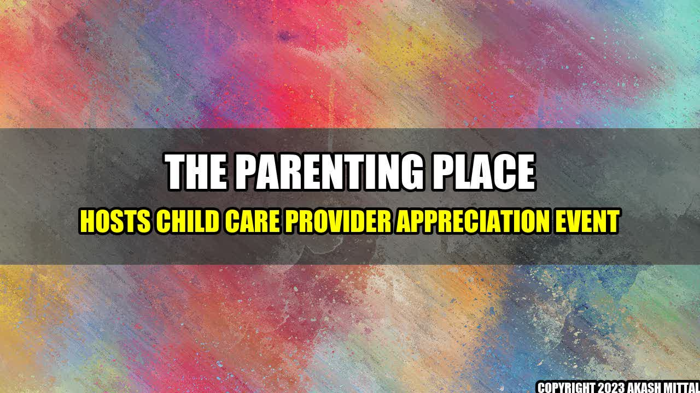

The Parenting Place Hosts Child Care Provider Appreciation Event

There is nothing quite like the bond between a child care provider and the children they care for. As parents, we entrust our little ones to these individuals on a daily basis, and they play a vital role in their development. That's why The Parenting Place is hosting a Child Care Provider Appreciation event, to recognize the hard work and dedication of the individuals who take care of our children.
The event, which is set to take place on May 14th at The Parenting Place, will celebrate the important work of child care providers in our community. The event will include a special presentation to honor the providers, as well as games, music, and refreshments. But more importantly, it will be an opportunity for parents and families to show their appreciation to the individuals who play such an important role in our children's lives.
the Importance of Child Care Providers
- According to a study by the National Institute of Child Health and Human Development, high-quality child care can have a positive impact on a child's cognitive development, as well as their social and emotional development.
- Child care providers can also play a key role in identifying and addressing developmental delays or behavioral concerns in children.
- The importance of child care providers has been highlighted during the COVID-19 pandemic, as many parents have had to rely on these individuals to continue working while their children are learning remotely.
Why Child Care Provider Appreciation Matters
While child care providers are often underappreciated, they play a crucial role in our children's lives. Expressing our gratitude to these individuals can have a positive impact on not just their day, but on the child care industry as a whole. Here are three reasons why child care provider appreciation matters:
- It promotes a positive work environment: When child care providers feel appreciated and valued, it can lead to a more positive work environment. This can translate into higher quality care for the children they serve.
- It encourages retention: High turnover rates are a major issue in the child care industry. By showing appreciation to child care providers, we can encourage them to stay in their roles for longer periods of time.
- It sets an example for children: By showing our appreciation for child care providers, we can set an example for our children about the importance of respecting and valuing those who care for us.
Tips for Showing Appreciation to Child Care Providers
If you're looking for ways to show your appreciation to the child care providers in your life, here are a few tips:
- Write a heartfelt note: A simple note expressing your gratitude can go a long way.
- Provide a small gift: A thoughtful gift, such as a gift card to a local coffee shop or a thoughtful piece of artwork made by your child, can be a great way to show your appreciation.
- Offer to help out: Whether it's bringing in snacks for the children or offering to help with administrative tasks, offering to help out in any way you can can be a great way to show your appreciation for child care providers.
Conclusion
Child care providers are an undervalued but vital part of our children's lives. By showing our appreciation to these individuals, we can promote a more positive work environment, encourage retention, and set an example for our children about the importance of valuing those who care for us.
So let's take the time to celebrate the child care providers in our lives. They deserve it!
References and Hashtags
Akash Mittal Tech Article
Share on Twitter Share on LinkedIn